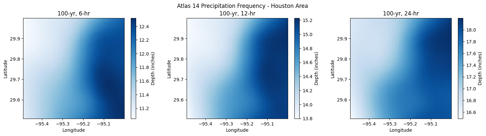
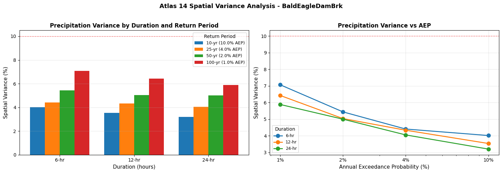
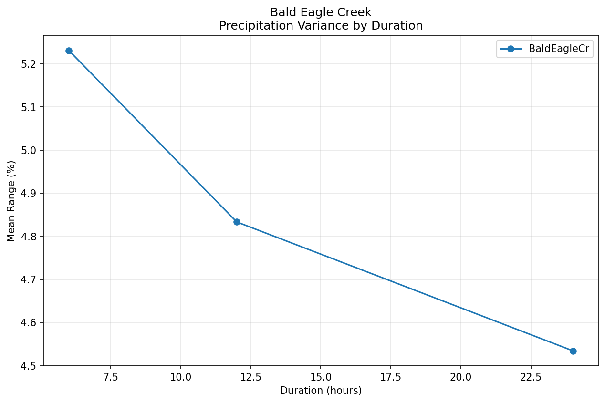
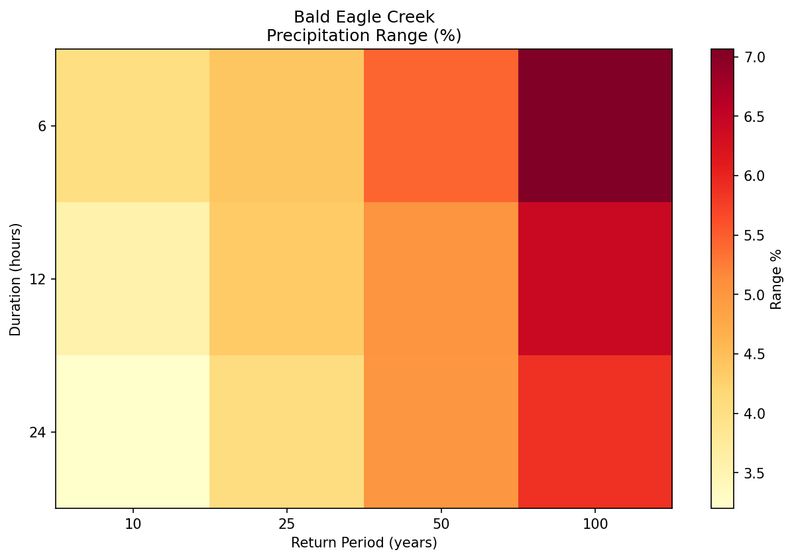

Atlas 14 Spatial Variance Analysis¶
This notebook demonstrates how to analyze spatial variability of NOAA Atlas 14 precipitation frequency estimates within a HEC-RAS model domain. This helps determine whether uniform rainfall assumptions are appropriate for rain-on-grid modeling.
Key Features: - Remote access to NOAA Atlas 14 CONUS data via HTTP range requests (99.9% data reduction) - Integration with HEC-RAS 2D flow area extents - Variance statistics (min, max, mean, range) for precipitation frequency - Decision support for uniform vs. spatially distributed rainfall
When to use this analysis: - Before rain-on-grid modeling to assess uniformity assumptions - For large model domains (>100 sq mi) where spatial variance may be significant - When comparing multiple design storm events
# =============================================================================
# DEVELOPMENT MODE TOGGLE
# =============================================================================
USE_LOCAL_SOURCE = True # <-- TOGGLE THIS
if USE_LOCAL_SOURCE:
import sys
from pathlib import Path
local_path = str(Path.cwd().parent)
if local_path not in sys.path:
sys.path.insert(0, local_path)
print(f"📁 LOCAL SOURCE MODE: Loading from {local_path}/ras_commander")
else:
print("📦 PIP PACKAGE MODE: Loading installed ras-commander")
import ras_commander
print(f"✓ Loaded: {ras_commander.__file__}")
📁 LOCAL SOURCE MODE: Loading from c:\GH\ras-commander/ras_commander
✓ Loaded: c:\GH\ras-commander\ras_commander\__init__.py
1. Direct Bounds Query¶
First, let's demonstrate querying Atlas 14 data for a specific geographic area without a HEC-RAS project. This is useful for exploring data availability and understanding precipitation patterns.
from ras_commander.precip import Atlas14Grid
# Query Atlas 14 data for Houston, TX area
# This uses HTTP range requests to download only the needed data
pfe = Atlas14Grid.get_pfe_for_bounds(
bounds=(-95.5, 29.5, -95.0, 30.0), # (west, south, east, north)
durations=[6, 12, 24],
return_periods=[10, 50, 100],
buffer_percent=0
)
print(f"Bounds: {pfe['bounds']}")
print(f"Grid dimensions: {pfe['lat'].shape[0]} x {pfe['lon'].shape[0]}")
print(f"Durations: {pfe['durations']} hours")
print(f"Return periods: {pfe['return_periods']} years")
2025-12-29 17:13:14 - ras_commander.precip.Atlas14Grid - INFO - Loading Atlas 14 coordinate arrays from remote file...
2025-12-29 17:13:29 - ras_commander.precip.Atlas14Grid - INFO - Loaded coordinates: lat=3121, lon=7081, ari=9
2025-12-29 17:13:29 - ras_commander.precip.Atlas14Grid - INFO - Extracting Atlas 14 data for bounds (-95.5000, 29.5000, -95.0000, 30.0000): lat[661:721], lon[3541:3601]
2025-12-29 17:13:34 - ras_commander.precip.Atlas14Grid - INFO - Data transfer: 189.8 KB (vs 1138.1 MB full grid, 100.0% reduction)
Bounds: (-95.5, 29.5, -95.0, 30.0)
Grid dimensions: 60 x 60
Durations: [6, 12, 24] hours
Return periods: [10, 50, 100] years
import numpy as np
# Examine the 100-year, 24-hour precipitation
data_24hr = pfe['pfe_24hr']
ari = pfe['ari']
# Find index for 100-year (ARI dimension is last)
ari_100_idx = np.argmin(np.abs(ari - 100))
data_100yr_24hr = data_24hr[:, :, ari_100_idx]
print(f"100-year, 24-hour precipitation:")
print(f" Min: {np.nanmin(data_100yr_24hr):.2f} inches")
print(f" Max: {np.nanmax(data_100yr_24hr):.2f} inches")
print(f" Mean: {np.nanmean(data_100yr_24hr):.2f} inches")
print(f" Range: {np.nanmax(data_100yr_24hr) - np.nanmin(data_100yr_24hr):.2f} inches")
print(f" Range %: {(np.nanmax(data_100yr_24hr) - np.nanmin(data_100yr_24hr)) / np.nanmin(data_100yr_24hr) * 100:.1f}%")
100-year, 24-hour precipitation:
Min: 16.49 inches
Max: 18.20 inches
Mean: 17.46 inches
Range: 1.71 inches
Range %: 10.4%
2. Visualize Spatial Variability¶
import matplotlib.pyplot as plt
# Create a simple visualization of spatial variability
fig, axes = plt.subplots(1, 3, figsize=(15, 4))
for idx, duration in enumerate([6, 12, 24]):
data = pfe[f'pfe_{duration}hr'][:, :, ari_100_idx]
ax = axes[idx]
im = ax.imshow(data, origin='lower',
extent=[pfe['lon'].min(), pfe['lon'].max(),
pfe['lat'].min(), pfe['lat'].max()],
cmap='Blues')
plt.colorbar(im, ax=ax, label='Depth (inches)')
ax.set_title(f'100-yr, {duration}-hr')
ax.set_xlabel('Longitude')
ax.set_ylabel('Latitude')
plt.suptitle('Atlas 14 Precipitation Frequency - Houston Area', fontsize=12)
plt.tight_layout()
plt.show()

3. Point Query for Single Location¶
For quick lookups at a specific location:
# Get PFE for a single point (downtown Houston)
point_df = Atlas14Grid.get_point_pfe(
lat=29.76,
lon=-95.37,
durations=[6, 12, 24],
return_periods=[10, 25, 50, 100, 500]
)
print("Point Precipitation Frequency Estimates (Houston, TX):")
point_df_pivot = point_df.pivot(
index='duration_hr',
columns='return_period_yr',
values='depth_inches'
)
print(point_df_pivot.round(2))
2025-12-29 17:13:35 - ras_commander.precip.Atlas14Grid - INFO - Point (29.7600, -95.3700) -> nearest grid (29.7583, -95.3667)
Point Precipitation Frequency Estimates (Houston, TX):
return_period_yr 10 25 50 100 500
duration_hr
6 6.15 7.97 9.56 11.41 16.95
12 7.39 9.69 11.72 14.11 21.22
24 8.75 11.56 14.07 17.00 25.46
4. Integration with HEC-RAS Project¶
The most powerful feature is automatic integration with HEC-RAS projects. The get_pfe_from_project() method extracts the extent from your geometry HDF file and downloads only the needed data.
Note: This example uses a sample project. Replace with your actual project path.
from ras_commander import RasExamples, init_ras_project
# Extract an example project with 2D flow areas
project_path = RasExamples.extract_project("BaldEagleCrkMulti2D", suffix="atlas14_variance")
print(f"Project extracted to: {project_path}")
# Initialize project
ras = init_ras_project(project_path, ras_version="6.6")
print(f"\nProject: {ras.project_name}")
print(f"Geometry files: {len(ras.geom_df)}")
2025-12-29 17:13:40 - ras_commander.RasExamples - INFO - ----- RasExamples Extracting Project -----
2025-12-29 17:13:40 - ras_commander.RasExamples - INFO - Extracting project 'BaldEagleCrkMulti2D' as 'BaldEagleCrkMulti2D_atlas14_variance'
2025-12-29 17:13:40 - ras_commander.RasExamples - INFO - Folder 'BaldEagleCrkMulti2D_atlas14_variance' already exists. Deleting existing folder...
2025-12-29 17:13:40 - ras_commander.RasExamples - INFO - Existing folder 'BaldEagleCrkMulti2D_atlas14_variance' has been deleted.
2025-12-29 17:13:42 - ras_commander.RasExamples - INFO - Successfully extracted project 'BaldEagleCrkMulti2D' to C:\GH\ras-commander\examples\example_projects\BaldEagleCrkMulti2D_atlas14_variance
2025-12-29 17:13:42 - ras_commander.RasMap - INFO - Successfully parsed RASMapper file: C:\GH\ras-commander\examples\example_projects\BaldEagleCrkMulti2D_atlas14_variance\BaldEagleDamBrk.rasmap
Project extracted to: C:\GH\ras-commander\examples\example_projects\BaldEagleCrkMulti2D_atlas14_variance
Project: BaldEagleDamBrk
Geometry files: 10
from pathlib import Path
# Find the geometry HDF file
geom_hdfs = list(project_path.glob("*.g*.hdf"))
if geom_hdfs:
geom_hdf = geom_hdfs[0]
print(f"Geometry HDF: {geom_hdf.name}")
else:
print("No geometry HDF found")
geom_hdf = None
Geometry HDF: BaldEagleDamBrk.g01.hdf
if geom_hdf:
# Get Atlas 14 data using 2D flow area extent
pfe_project = Atlas14Grid.get_pfe_from_project(
geom_hdf=geom_hdf,
extent_source="2d_flow_area", # Use 2D flow areas
durations=[6, 12, 24],
return_periods=[10, 25, 50, 100],
buffer_percent=10.0,
ras_object=ras
)
print(f"Extent source: {pfe_project['extent_source']}")
print(f"Bounds: {pfe_project['bounds']}")
print(f"Grid dimensions: {pfe_project['lat'].shape[0]} x {pfe_project['lon'].shape[0]}")
if 'mesh_area_names' in pfe_project:
print(f"2D Areas: {pfe_project['mesh_area_names']}")
2025-12-29 17:13:42 - ras_commander.precip.Atlas14Grid - INFO - Extracting extent from C:\GH\ras-commander\examples\example_projects\BaldEagleCrkMulti2D_atlas14_variance\BaldEagleDamBrk.g01.hdf using 2d_flow_area
2025-12-29 17:13:42 - ras_commander.hdf.HdfMesh - INFO - Using existing Path object HDF file: C:\GH\ras-commander\examples\example_projects\BaldEagleCrkMulti2D_atlas14_variance\BaldEagleDamBrk.g01.hdf
2025-12-29 17:13:42 - ras_commander.hdf.HdfMesh - INFO - Final validated file path: C:\GH\ras-commander\examples\example_projects\BaldEagleCrkMulti2D_atlas14_variance\BaldEagleDamBrk.g01.hdf
2025-12-29 17:13:42 - ras_commander.hdf.HdfMesh - INFO - Using existing Path object HDF file: C:\GH\ras-commander\examples\example_projects\BaldEagleCrkMulti2D_atlas14_variance\BaldEagleDamBrk.g01.hdf
2025-12-29 17:13:42 - ras_commander.hdf.HdfMesh - INFO - Final validated file path: C:\GH\ras-commander\examples\example_projects\BaldEagleCrkMulti2D_atlas14_variance\BaldEagleDamBrk.g01.hdf
2025-12-29 17:13:42 - ras_commander.hdf.HdfBase - INFO - Using HDF file from h5py.File object: C:\GH\ras-commander\examples\example_projects\BaldEagleCrkMulti2D_atlas14_variance\BaldEagleDamBrk.g01.hdf
2025-12-29 17:13:42 - ras_commander.hdf.HdfBase - INFO - Final validated file path: C:\GH\ras-commander\examples\example_projects\BaldEagleCrkMulti2D_atlas14_variance\BaldEagleDamBrk.g01.hdf
2025-12-29 17:13:42 - ras_commander.hdf.HdfBase - INFO - Found projection in RASMapper file: C:\GH\ras-commander\examples\example_projects\BaldEagleCrkMulti2D_atlas14_variance\Terrain\Projection.prj
2025-12-29 17:13:42 - ras_commander.hdf.HdfBase - INFO - Converted WKT to EPSG:2271 from RASMapper file Projection.prj
2025-12-29 17:13:42 - ras_commander.precip.Atlas14Grid - INFO - 2D flow area bounds: W=-77.6324, S=41.0459, E=-77.3275, N=41.1842
2025-12-29 17:13:42 - ras_commander.precip.Atlas14Grid - INFO - Extracting Atlas 14 data for bounds (-77.6629, 41.0321, -77.2970, 41.1980): lat[2044:2064], lon[5681:5725]
2025-12-29 17:13:52 - ras_commander.precip.Atlas14Grid - INFO - Data transfer: 46.4 KB (vs 1138.1 MB full grid, 100.0% reduction)
Extent source: 2d_flow_area
Bounds: (np.float64(-77.6628709426164), np.float64(41.03210835058915), np.float64(-77.2970389985552), np.float64(41.197997263936664))
Grid dimensions: 20 x 44
2D Areas: ['BaldEagleCr']
5. Full Variance Analysis¶
The Atlas14Variance class provides comprehensive variance analysis:
from ras_commander.precip import Atlas14Variance
if geom_hdf:
# Run full variance analysis
results = Atlas14Variance.analyze(
geom_hdf=geom_hdf,
durations=[6, 12, 24],
return_periods=[10, 25, 50, 100],
extent_source="2d_flow_area",
variance_denominator='min', # range_pct = (max-min)/min * 100
ras_object=ras
)
print("\nVariance Analysis Results:")
print(results.to_string(index=False))
2025-12-29 17:13:52 - ras_commander.precip.Atlas14Variance - INFO - Starting Atlas 14 variance analysis for BaldEagleDamBrk.g01.hdf
2025-12-29 17:13:52 - ras_commander.precip.Atlas14Variance - INFO - Durations: [6, 12, 24] hours, Return periods: [10, 25, 50, 100] years
2025-12-29 17:13:52 - ras_commander.precip.Atlas14Grid - INFO - Extracting extent from C:\GH\ras-commander\examples\example_projects\BaldEagleCrkMulti2D_atlas14_variance\BaldEagleDamBrk.g01.hdf using 2d_flow_area
2025-12-29 17:13:52 - ras_commander.hdf.HdfMesh - INFO - Using existing Path object HDF file: C:\GH\ras-commander\examples\example_projects\BaldEagleCrkMulti2D_atlas14_variance\BaldEagleDamBrk.g01.hdf
2025-12-29 17:13:52 - ras_commander.hdf.HdfMesh - INFO - Final validated file path: C:\GH\ras-commander\examples\example_projects\BaldEagleCrkMulti2D_atlas14_variance\BaldEagleDamBrk.g01.hdf
2025-12-29 17:13:52 - ras_commander.hdf.HdfMesh - INFO - Using existing Path object HDF file: C:\GH\ras-commander\examples\example_projects\BaldEagleCrkMulti2D_atlas14_variance\BaldEagleDamBrk.g01.hdf
2025-12-29 17:13:52 - ras_commander.hdf.HdfMesh - INFO - Final validated file path: C:\GH\ras-commander\examples\example_projects\BaldEagleCrkMulti2D_atlas14_variance\BaldEagleDamBrk.g01.hdf
2025-12-29 17:13:52 - ras_commander.hdf.HdfBase - INFO - Using HDF file from h5py.File object: C:\GH\ras-commander\examples\example_projects\BaldEagleCrkMulti2D_atlas14_variance\BaldEagleDamBrk.g01.hdf
2025-12-29 17:13:52 - ras_commander.hdf.HdfBase - INFO - Final validated file path: C:\GH\ras-commander\examples\example_projects\BaldEagleCrkMulti2D_atlas14_variance\BaldEagleDamBrk.g01.hdf
2025-12-29 17:13:52 - ras_commander.hdf.HdfBase - INFO - Found projection in RASMapper file: C:\GH\ras-commander\examples\example_projects\BaldEagleCrkMulti2D_atlas14_variance\Terrain\Projection.prj
2025-12-29 17:13:52 - ras_commander.hdf.HdfBase - INFO - Converted WKT to EPSG:2271 from RASMapper file Projection.prj
2025-12-29 17:13:52 - ras_commander.precip.Atlas14Grid - INFO - 2D flow area bounds: W=-77.6324, S=41.0459, E=-77.3275, N=41.1842
2025-12-29 17:13:52 - ras_commander.precip.Atlas14Grid - INFO - Extracting Atlas 14 data for bounds (-77.6629, 41.0321, -77.2970, 41.1980): lat[2044:2064], lon[5681:5725]
2025-12-29 17:14:06 - ras_commander.precip.Atlas14Grid - INFO - Data transfer: 46.4 KB (vs 1138.1 MB full grid, 100.0% reduction)
2025-12-29 17:14:06 - ras_commander.hdf.HdfMesh - INFO - Using existing Path object HDF file: C:\GH\ras-commander\examples\example_projects\BaldEagleCrkMulti2D_atlas14_variance\BaldEagleDamBrk.g01.hdf
2025-12-29 17:14:06 - ras_commander.hdf.HdfMesh - INFO - Final validated file path: C:\GH\ras-commander\examples\example_projects\BaldEagleCrkMulti2D_atlas14_variance\BaldEagleDamBrk.g01.hdf
2025-12-29 17:14:06 - ras_commander.hdf.HdfMesh - INFO - Using existing Path object HDF file: C:\GH\ras-commander\examples\example_projects\BaldEagleCrkMulti2D_atlas14_variance\BaldEagleDamBrk.g01.hdf
2025-12-29 17:14:06 - ras_commander.hdf.HdfMesh - INFO - Final validated file path: C:\GH\ras-commander\examples\example_projects\BaldEagleCrkMulti2D_atlas14_variance\BaldEagleDamBrk.g01.hdf
2025-12-29 17:14:06 - ras_commander.hdf.HdfBase - INFO - Using HDF file from h5py.File object: C:\GH\ras-commander\examples\example_projects\BaldEagleCrkMulti2D_atlas14_variance\BaldEagleDamBrk.g01.hdf
2025-12-29 17:14:06 - ras_commander.hdf.HdfBase - INFO - Final validated file path: C:\GH\ras-commander\examples\example_projects\BaldEagleCrkMulti2D_atlas14_variance\BaldEagleDamBrk.g01.hdf
2025-12-29 17:14:07 - ras_commander.hdf.HdfBase - INFO - Found projection in RASMapper file: C:\GH\ras-commander\examples\example_projects\BaldEagleCrkMulti2D_atlas14_variance\Terrain\Projection.prj
2025-12-29 17:14:07 - ras_commander.hdf.HdfBase - INFO - Converted WKT to EPSG:2271 from RASMapper file Projection.prj
2025-12-29 17:14:07 - ras_commander.precip.Atlas14Variance - INFO - Analyzing mesh area: BaldEagleCr
2025-12-29 17:14:07 - ras_commander.precip.Atlas14Variance - INFO - Variance analysis complete: max range = 7.1%, mean range = 4.9%
Variance Analysis Results:
mesh_area duration_hr return_period_yr min_inches max_inches mean_inches range_inches range_pct cell_count
BaldEagleCr 6 10 2.49 2.59 2.534113 0.10 4.016060 124
BaldEagleCr 6 25 2.95 3.08 3.003226 0.13 4.406775 124
BaldEagleCr 6 50 3.31 3.49 3.388387 0.18 5.438069 124
BaldEagleCr 6 100 3.68 3.94 3.794839 0.26 7.065217 124
BaldEagleCr 12 10 3.11 3.22 3.161451 0.11 3.536982 124
BaldEagleCr 12 25 3.69 3.85 3.762258 0.16 4.336046 124
BaldEagleCr 12 50 4.17 4.38 4.263307 0.21 5.035972 124
BaldEagleCr 12 100 4.67 4.97 4.800322 0.30 6.423977 124
BaldEagleCr 24 10 3.75 3.87 3.797580 0.12 3.199997 124
BaldEagleCr 24 25 4.44 4.62 4.515000 0.18 4.054050 124
BaldEagleCr 24 50 5.00 5.25 5.113468 0.25 5.000000 124
BaldEagleCr 24 100 5.61 5.94 5.753951 0.33 5.882360 124
if geom_hdf and not results.empty:
# Check if uniform rainfall is appropriate
ok, message = Atlas14Variance.is_uniform_rainfall_appropriate(results, threshold_pct=10.0)
print(f"\n{'✓' if ok else '⚠️'} {message}")
# Show highest variance events
if not ok:
print("\nHighest variance events:")
high_var = results.nlargest(3, 'range_pct')[['duration_hr', 'return_period_yr', 'min_inches', 'max_inches', 'range_pct']]
print(high_var.to_string(index=False))
✓ Uniform rainfall appropriate. Maximum variance is 7.1% (threshold: 10.0%)
6. Visualize Variance by Duration and AEP¶
Let's create a detailed visualization showing how variance changes across different storm durations and Annual Exceedance Probability (AEP) intervals.
if geom_hdf and not results.empty:
import matplotlib.pyplot as plt
import numpy as np
# Create figure with two subplots
fig, (ax1, ax2) = plt.subplots(1, 2, figsize=(15, 5))
# Calculate AEP from return period (AEP = 1/return_period * 100 for percentage)
results_plot = results.copy()
results_plot['aep_pct'] = (1 / results_plot['return_period_yr'] * 100).round(2)
# Plot 1: Range % by Duration (grouped by return period)
durations = sorted(results_plot['duration_hr'].unique())
return_periods = sorted(results_plot['return_period_yr'].unique())
x = np.arange(len(durations))
width = 0.2
for i, rp in enumerate(return_periods):
data = results_plot[results_plot['return_period_yr'] == rp]
data_sorted = data.sort_values('duration_hr')
aep = (1/rp * 100)
offset = (i - len(return_periods)/2 + 0.5) * width
ax1.bar(x + offset, data_sorted['range_pct'], width,
label=f'{rp}-yr ({aep:.1f}% AEP)')
ax1.set_xlabel('Duration (hours)', fontsize=11)
ax1.set_ylabel('Spatial Variance (%)', fontsize=11)
ax1.set_title('Precipitation Variance by Duration and Return Period', fontsize=12, fontweight='bold')
ax1.set_xticks(x)
ax1.set_xticklabels([f'{int(d)}-hr' for d in durations])
ax1.legend(title='Return Period', fontsize=9)
ax1.grid(True, alpha=0.3, axis='y')
ax1.axhline(y=10, color='red', linestyle='--', alpha=0.5, linewidth=1, label='10% threshold')
# Plot 2: Range % vs AEP (lines for each duration)
for duration in durations:
data = results_plot[results_plot['duration_hr'] == duration]
data_sorted = data.sort_values('aep_pct', ascending=False) # Sort by AEP descending
ax2.plot(data_sorted['aep_pct'], data_sorted['range_pct'],
marker='o', linewidth=2, markersize=8, label=f'{int(duration)}-hr')
ax2.set_xlabel('Annual Exceedance Probability (%)', fontsize=11)
ax2.set_ylabel('Spatial Variance (%)', fontsize=11)
ax2.set_title('Precipitation Variance vs AEP', fontsize=12, fontweight='bold')
ax2.legend(title='Duration', fontsize=9)
ax2.grid(True, alpha=0.3)
ax2.axhline(y=10, color='red', linestyle='--', alpha=0.5, linewidth=1)
ax2.set_xscale('log') # Log scale for AEP (common, moderate, rare events)
# Format x-axis for common AEP values
ax2.set_xticks([1, 2, 4, 10])
ax2.set_xticklabels(['1%', '2%', '4%', '10%'])
plt.suptitle(f'Atlas 14 Spatial Variance Analysis - {ras.project_name}',
fontsize=13, fontweight='bold', y=1.02)
plt.tight_layout()
plt.show()
# Print summary statistics
print("\nVariance Summary by Duration:")
print("=" * 70)
summary = results_plot.groupby('duration_hr').agg({
'range_pct': ['min', 'max', 'mean'],
'range_inches': ['min', 'max', 'mean']
}).round(2)
print(summary)
print("\n\nVariance Summary by Return Period (AEP):")
print("=" * 70)
summary2 = results_plot.groupby(['return_period_yr', 'aep_pct']).agg({
'range_pct': ['min', 'max', 'mean'],
'range_inches': ['min', 'max', 'mean']
}).round(2)
print(summary2)

Variance Summary by Duration:
======================================================================
range_pct range_inches
min max mean min max mean
duration_hr
6 4.02 7.07 5.23 0.10 0.26 0.17
12 3.54 6.42 4.83 0.11 0.30 0.19
24 3.20 5.88 4.53 0.12 0.33 0.22
Variance Summary by Return Period (AEP):
======================================================================
range_pct range_inches
min max mean min max mean
return_period_yr aep_pct
10 10.0 3.20 4.02 3.58 0.10 0.12 0.11
25 4.0 4.05 4.41 4.27 0.13 0.18 0.16
50 2.0 5.00 5.44 5.16 0.18 0.25 0.21
100 1.0 5.88 7.07 6.46 0.26 0.33 0.30
7. Quick Variance Check¶
For a rapid assessment using a single representative event (default: 100-year, 24-hour):
if geom_hdf:
# Quick check for 100-year, 24-hour
quick_stats = Atlas14Variance.analyze_quick(
geom_hdf=geom_hdf,
duration=24,
return_period=100
)
print("Quick Variance Check (100-yr, 24-hr):")
print(f" Min: {quick_stats['min']:.2f} inches")
print(f" Max: {quick_stats['max']:.2f} inches")
print(f" Mean: {quick_stats['mean']:.2f} inches")
print(f" Range: {quick_stats['range']:.2f} inches")
print(f" Range %: {quick_stats['range_pct']:.1f}%")
if quick_stats['range_pct'] > 10:
print("\n⚠️ Consider using spatially variable rainfall")
else:
print("\n✓ Uniform rainfall is likely appropriate")
2025-12-29 17:14:07 - ras_commander.precip.Atlas14Variance - INFO - Starting Atlas 14 variance analysis for BaldEagleDamBrk.g01.hdf
2025-12-29 17:14:07 - ras_commander.precip.Atlas14Variance - INFO - Durations: [24] hours, Return periods: [100] years
2025-12-29 17:14:07 - ras_commander.precip.Atlas14Grid - INFO - Extracting extent from C:\GH\ras-commander\examples\example_projects\BaldEagleCrkMulti2D_atlas14_variance\BaldEagleDamBrk.g01.hdf using 2d_flow_area
2025-12-29 17:14:07 - ras_commander.hdf.HdfMesh - INFO - Using existing Path object HDF file: C:\GH\ras-commander\examples\example_projects\BaldEagleCrkMulti2D_atlas14_variance\BaldEagleDamBrk.g01.hdf
2025-12-29 17:14:07 - ras_commander.hdf.HdfMesh - INFO - Final validated file path: C:\GH\ras-commander\examples\example_projects\BaldEagleCrkMulti2D_atlas14_variance\BaldEagleDamBrk.g01.hdf
2025-12-29 17:14:07 - ras_commander.hdf.HdfMesh - INFO - Using existing Path object HDF file: C:\GH\ras-commander\examples\example_projects\BaldEagleCrkMulti2D_atlas14_variance\BaldEagleDamBrk.g01.hdf
2025-12-29 17:14:07 - ras_commander.hdf.HdfMesh - INFO - Final validated file path: C:\GH\ras-commander\examples\example_projects\BaldEagleCrkMulti2D_atlas14_variance\BaldEagleDamBrk.g01.hdf
2025-12-29 17:14:07 - ras_commander.hdf.HdfBase - INFO - Using HDF file from h5py.File object: C:\GH\ras-commander\examples\example_projects\BaldEagleCrkMulti2D_atlas14_variance\BaldEagleDamBrk.g01.hdf
2025-12-29 17:14:07 - ras_commander.hdf.HdfBase - INFO - Final validated file path: C:\GH\ras-commander\examples\example_projects\BaldEagleCrkMulti2D_atlas14_variance\BaldEagleDamBrk.g01.hdf
2025-12-29 17:14:07 - ras_commander.hdf.HdfBase - INFO - Found projection in RASMapper file: C:\GH\ras-commander\examples\example_projects\BaldEagleCrkMulti2D_atlas14_variance\Terrain\Projection.prj
2025-12-29 17:14:07 - ras_commander.hdf.HdfBase - INFO - Converted WKT to EPSG:2271 from RASMapper file Projection.prj
2025-12-29 17:14:07 - ras_commander.precip.Atlas14Grid - INFO - 2D flow area bounds: W=-77.6324, S=41.0459, E=-77.3275, N=41.1842
2025-12-29 17:14:07 - ras_commander.precip.Atlas14Grid - INFO - Extracting Atlas 14 data for bounds (-77.6629, 41.0321, -77.2970, 41.1980): lat[2044:2064], lon[5681:5725]
2025-12-29 17:14:13 - ras_commander.precip.Atlas14Grid - INFO - Data transfer: 15.5 KB (vs 379.4 MB full grid, 100.0% reduction)
2025-12-29 17:14:13 - ras_commander.hdf.HdfMesh - INFO - Using existing Path object HDF file: C:\GH\ras-commander\examples\example_projects\BaldEagleCrkMulti2D_atlas14_variance\BaldEagleDamBrk.g01.hdf
2025-12-29 17:14:13 - ras_commander.hdf.HdfMesh - INFO - Final validated file path: C:\GH\ras-commander\examples\example_projects\BaldEagleCrkMulti2D_atlas14_variance\BaldEagleDamBrk.g01.hdf
2025-12-29 17:14:13 - ras_commander.hdf.HdfMesh - INFO - Using existing Path object HDF file: C:\GH\ras-commander\examples\example_projects\BaldEagleCrkMulti2D_atlas14_variance\BaldEagleDamBrk.g01.hdf
2025-12-29 17:14:13 - ras_commander.hdf.HdfMesh - INFO - Final validated file path: C:\GH\ras-commander\examples\example_projects\BaldEagleCrkMulti2D_atlas14_variance\BaldEagleDamBrk.g01.hdf
2025-12-29 17:14:13 - ras_commander.hdf.HdfBase - INFO - Using HDF file from h5py.File object: C:\GH\ras-commander\examples\example_projects\BaldEagleCrkMulti2D_atlas14_variance\BaldEagleDamBrk.g01.hdf
2025-12-29 17:14:13 - ras_commander.hdf.HdfBase - INFO - Final validated file path: C:\GH\ras-commander\examples\example_projects\BaldEagleCrkMulti2D_atlas14_variance\BaldEagleDamBrk.g01.hdf
2025-12-29 17:14:13 - ras_commander.hdf.HdfBase - INFO - Found projection in RASMapper file: C:\GH\ras-commander\examples\example_projects\BaldEagleCrkMulti2D_atlas14_variance\Terrain\Projection.prj
2025-12-29 17:14:13 - ras_commander.hdf.HdfBase - INFO - Converted WKT to EPSG:2271 from RASMapper file Projection.prj
2025-12-29 17:14:13 - ras_commander.precip.Atlas14Variance - INFO - Analyzing mesh area: BaldEagleCr
2025-12-29 17:14:13 - ras_commander.precip.Atlas14Variance - INFO - Variance analysis complete: max range = 5.9%, mean range = 5.9%
Quick Variance Check (100-yr, 24-hr):
Min: 5.61 inches
Max: 5.94 inches
Mean: 5.75 inches
Range: 0.33 inches
Range %: 5.9%
✓ Uniform rainfall is likely appropriate
8. Generate Report¶
Export results with plots for engineering review:
if geom_hdf and not results.empty:
output_dir = project_path / "Atlas14_Variance_Report"
report_dir = Atlas14Variance.generate_report(
results_df=results,
output_dir=output_dir,
project_name="Bald Eagle Creek",
include_plots=True
)
print(f"\nReport generated at: {report_dir}")
print("\nFiles created:")
for f in report_dir.glob("*"):
print(f" - {f.name}")
# Display plots inline
from IPython.display import Image, display
import matplotlib.pyplot as plt
print("\n" + "="*80)
print("Variance Plots")
print("="*80)
# Show variance by duration plot
var_duration_plot = report_dir / "variance_by_duration.png"
if var_duration_plot.exists():
print("\nVariance by Duration:")
display(Image(filename=str(var_duration_plot)))
# Show heatmap
heatmap_plot = report_dir / "variance_heatmap.png"
if heatmap_plot.exists():
print("\nVariance Heatmap:")
display(Image(filename=str(heatmap_plot)))
2025-12-29 17:14:13 - ras_commander.precip.Atlas14Variance - INFO - Saved statistics to: C:\GH\ras-commander\examples\example_projects\BaldEagleCrkMulti2D_atlas14_variance\Atlas14_Variance_Report\variance_statistics.csv
2025-12-29 17:14:13 - ras_commander.precip.Atlas14Variance - INFO - Saved summary to: C:\GH\ras-commander\examples\example_projects\BaldEagleCrkMulti2D_atlas14_variance\Atlas14_Variance_Report\variance_summary.csv
2025-12-29 17:14:13 - ras_commander.precip.Atlas14Variance - INFO - Saved plot: C:\GH\ras-commander\examples\example_projects\BaldEagleCrkMulti2D_atlas14_variance\Atlas14_Variance_Report\variance_by_duration.png
2025-12-29 17:14:13 - ras_commander.precip.Atlas14Variance - INFO - Saved plot: C:\GH\ras-commander\examples\example_projects\BaldEagleCrkMulti2D_atlas14_variance\Atlas14_Variance_Report\variance_heatmap.png
2025-12-29 17:14:13 - ras_commander.precip.Atlas14Variance - INFO - Report generated in: C:\GH\ras-commander\examples\example_projects\BaldEagleCrkMulti2D_atlas14_variance\Atlas14_Variance_Report
Report generated at: C:\GH\ras-commander\examples\example_projects\BaldEagleCrkMulti2D_atlas14_variance\Atlas14_Variance_Report
Files created:
- variance_by_duration.png
- variance_heatmap.png
- variance_statistics.csv
- variance_summary.csv
================================================================================
Variance Plots
================================================================================
Variance by Duration:

Variance Heatmap:

9. Cleanup¶
# Clear the coordinate cache to free memory
Atlas14Grid.clear_cache()
print("Cache cleared")
# Optionally clean up extracted project
# import shutil
# shutil.rmtree(project_path.parent, ignore_errors=True)
Cache cleared
Summary¶
This notebook demonstrated:
- Direct Bounds Query - Get Atlas 14 data for any geographic area
- Point Query - Quick lookup for a single location
- HEC-RAS Integration - Automatic extent extraction from 2D flow areas
- Variance Analysis - Calculate min/max/mean/range statistics
- Decision Support - Determine if uniform rainfall is appropriate
- Report Generation - Export results for engineering review
Key Takeaways: - Range percentage > 10% suggests spatially variable rainfall should be considered - The analysis uses HTTP range requests to minimize data transfer (~99.9% reduction) - All CONUS locations are supported (24°N-50°N, -125°W to -66°W)
References: - NOAA Atlas 14 - Precipitation Frequency Data Server